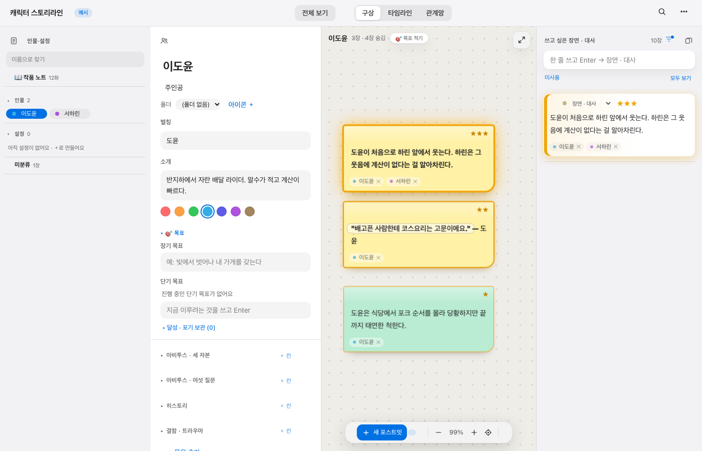
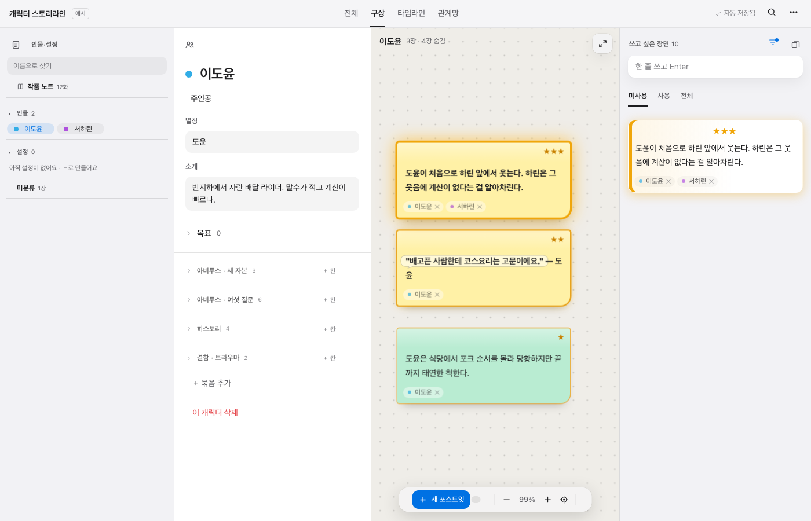
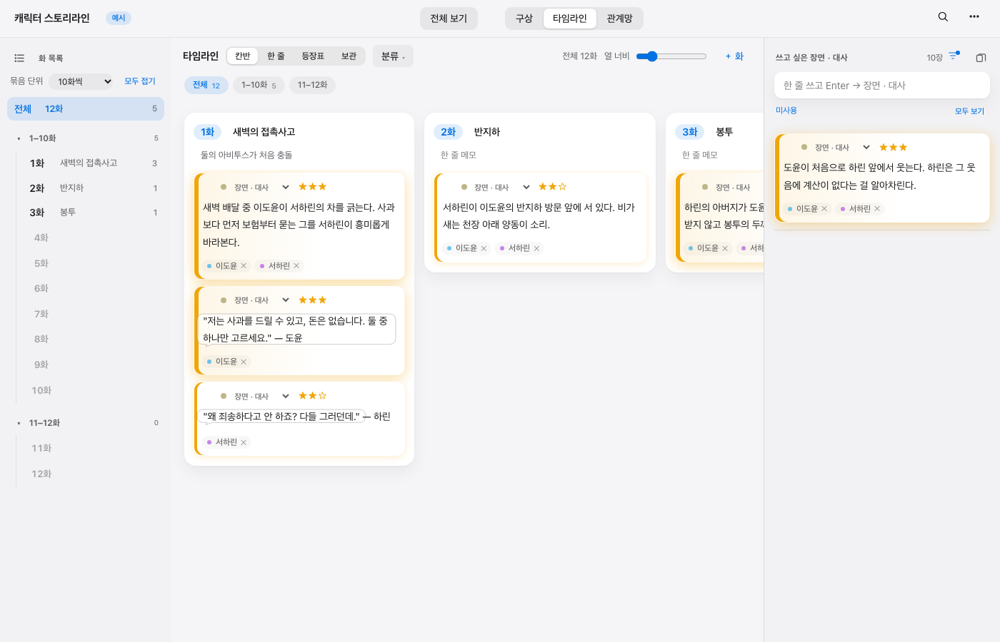
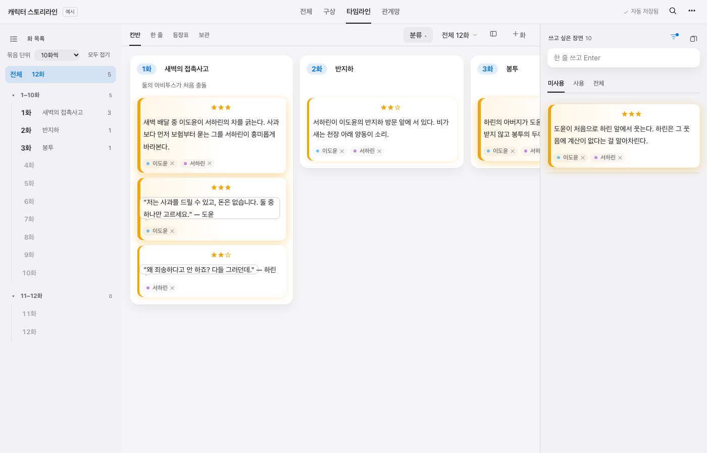
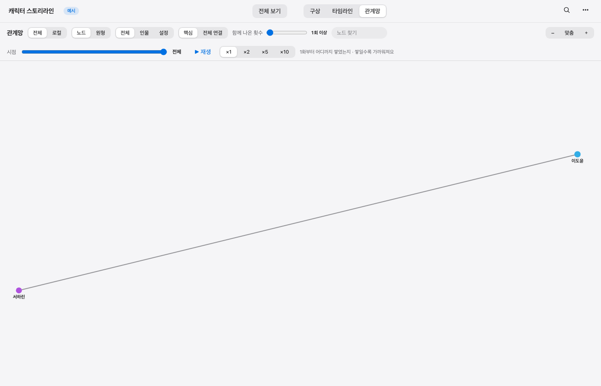
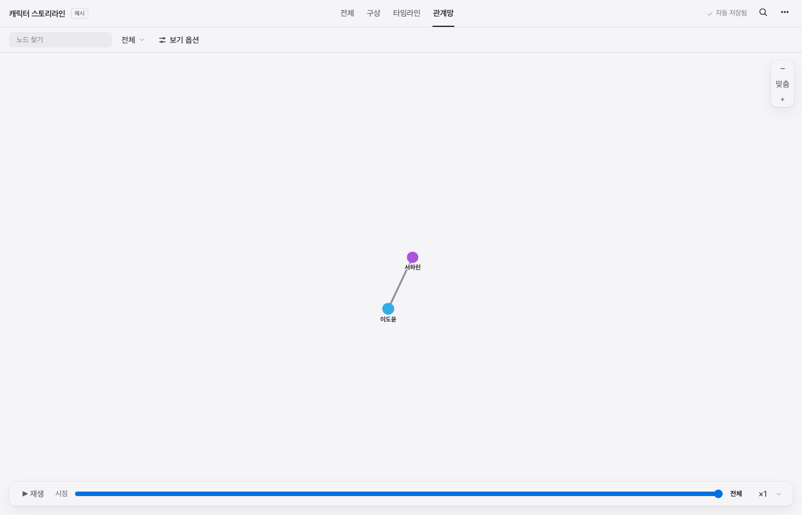

기존 디자인 → 새 디자인
같은 예시 데이터, 같은 창 크기(1400×900). 새 디자인은 설정 → 겉모습 → 화면 디자인에서 켜야 보여요.
1 · 구상
기존
새 디자인
- 위쪽: 알약 버튼 2묶음(전체 보기 / 구상·타임라인·관계망) → 밑줄 탭 한 줄
- 오른쪽 위에 “✓ 자동 저장됨” 표시 추가
- 인물 시트: 폴더 · 아이콘 · 색 7개가 늘 보임 → 이름 옆 색 점을 누를 때만
- 목표: 장기·단기 입력칸이 다 펼쳐짐 → “목표 0” 한 줄로 접힘
- 칸 묶음 옆에 개수 표시 (아비투스 · 세 자본 3)
- 보드 위 “🎯 목표 적기” 버튼 → 시트에 있으니 숨김
- 오른쪽 목록: “미사용 / 모두 보기” 링크 → 미사용 · 사용 · 전체 밑줄 탭
- 목록 카드의 “장면·대사 ▾” → 마우스를 올릴 때만
- 📖 같은 이모지 → 얇은 선 아이콘
- 파란 글자 버튼(+ 칸, 아이콘 + 등) → 흐린 회색
2 · 타임라인
기존
새 디자인
- 칸반 · 한 줄 · 등장표 · 보관: 알약 → 밑줄 탭
- “전체 12 / 1–10화 / 11–12화” 칩 줄 → “전체 12화 ▾” 드롭다운 하나
- 열 너비 슬라이더 → 아이콘을 누르면 나오는 작은 창
- “＋ 화” → 흐린 글자 버튼
- 카드마다 붙은 분류 표시 → 마우스를 올릴 때만
- 빈 “한 줄 메모” 안내 글자 → 마우스를 올릴 때만
3 · 관계망
기존
새 디자인
- 버튼 묶음 6개가 두 줄 → 검색 · “인물 + 설정 ▾” · “보기 옵션” 한 줄
- 범위 · 배치 · 연결 · 함께 나온 횟수 → “보기 옵션” 안으로
- 시점 · 재생 · 배속(×1 ×2 ×5 ×10) → 아래쪽 바 하나, 배속은 드롭다운
- 회색 설명 문구 → “시점”에 마우스를 올리면 툴팁
- 확대 · 맞춤 · 축소 → 오른쪽 위 작은 세로 묶음